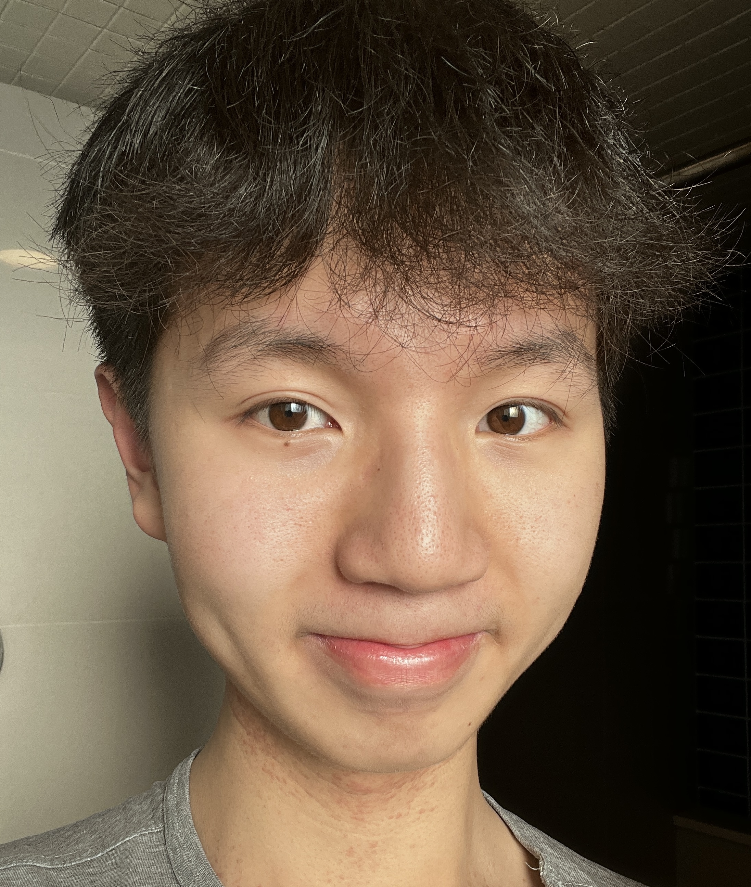

Objective
As a computing science student, I am passionate in applying my programming skills to solve real-life problems. With experience in programming languages such as Python and C, I am always looking for learning opportunities for self-improvement.
Highlights
-
Developed HTML, CSS, and Javascript skills by creating individual websites
-
Implemented games and programs by applying Python, and C coding skills learned in school
-
Created compact databases and retrieved data using SQL in individual projects
-
Collaborated with the Univesity Career Center Team in providing career services to students
-
Resolved conflicts within the residence using educational and restorative approaches
-
Communicated effectively as a server by building positive relationships and delivering customers’ needs
Education
University of Alberta
Bachelor of Science with Specialization in Computing Science (Sep 2022 - May 2026)
Awards and Scholarship
- the Universit of Alberta Undergraduate International Scholarship (2023)
- the University of Alberta International Leader Scholarship (2022)
- the University of Alberta International Admission Scholarship (2022)
- the University of Alberta Gold Standard Scholarship (2022)
- The Faculty of Science Gold Standard Scholarship (2022)
Projects
Porfolio Website (individual)
- Multipaged website including personal bio, experience, interests and hobbies
- Tools: HTML, CSS, Javascript
Money Manager (Individual)
-
Compact database tracking daily income and expenditure to facilitate better financial planning
-
Tools: SQL
Work Experience
Career Peer Educator
Career Center, University of Alberta, 2023 August - Present
-
Demonstrate communication skills and autonomy by guiding students on career resources and job search strategies through one-on-one appointments
-
Collaborate with other Career Peer Educators and full-time staff on delivering career services such as desk duty, Career Centre projects and Careers Fairs
-
Present public speaking and group facilitation skills through leading seminars about career development, as well as coordinating employer information sessions
Residence Assistance
Residence, University of Alberta, 2023 Feb - May
-
Addressed resident behaviour by responding to, documenting, and resolving cases of negative or impactful behaviour in residence through the use of educational and restorative processes
-
Established connections and engaged in supportive conversations with residents while planning, facilitating, and evaluating the success of community-building initiatives
-
Collaborated and communicated with the area Residence Association to ensure the educational and social needs of residents are met
Server
Korean Village BBQ, Edmonton, 2023 Feb - Oct
-
Built positive relationships with customers and colleagues, fostering a supportive and collaborative team environment
-
Responded quickly to customer complaints regarding food and service by showing empathy and professionalism
-
Maintained a clean and organized workspace, ensuring that all tables were properly set up and that the dining area was tidy and welcoming
Volunteering
Co-treasurer SVCC Club, University of Alberta
-
Cooperated with the president in deciding the annual budget and financial strategies
Presenter Sciencefundamentals Student Group, University of Alberta
-
Delivered science presentations to Elementary school students through interactive demonstrations
Youth Mentor, Big Brothers Big Sisters, Saint John
-
Organized indoor and outdoor activities to form connections with mentees during weekly meetings
-
Arranged monthly joint events with other mentors to guide mentees develop interconnections while respecting and supporting mentees
Open House Committee Head, Saint John High School
-
Conducted a film-making process for the creation of an open-house video
-
Organized the open house event to advertise high school spirit to middle school students
-
Provided support and supervised new students via zoom meetings or in-person advising
Peer Tutor, Saint John High School
-
Provided tutoring in Math and Chemistry for fellow high school students through one-to-one appointment and semester-long progress monitoring
Church Translator, RiverCross Church Saint John
-
Translated English into Mandarin simultaneously during weekly gatherings while helpint and guiding people who were not proficient in English to understand sermons
Contact
About Me